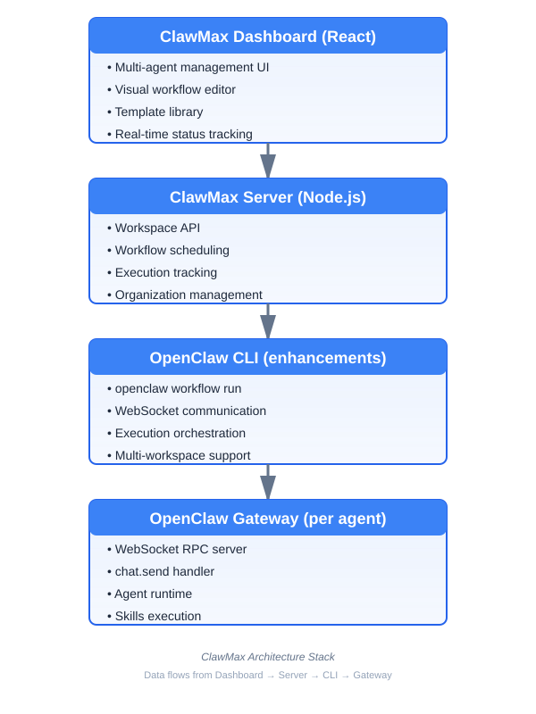
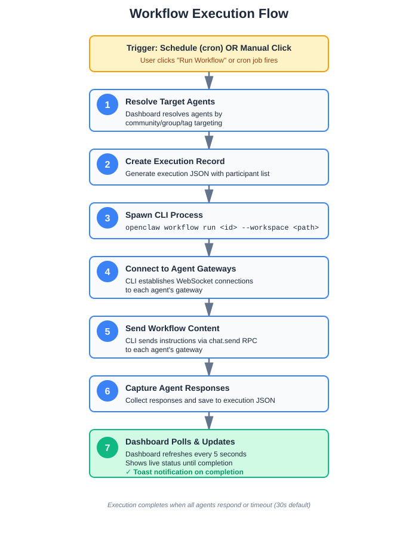

Multi-Agent 🦞 Orchestration Made Simple
March 13, 2026 • v1.0.0 Launch
Managing 100 agents isn't like managing 10 people.
It's worse.

Switch to Dashboard
Switch to Workflows → Run "Daily Standup"
💡 Workflows support cron schedules for automated execution
Apply "Small Startup Team" → 3 agents + 2 workflows in 30 seconds
(Beta - Coming in v1.1.0)
Example:
"Create a QA workflow targeting engineers"
→ Complete workflow generated with targeting, schedule, and instructions
React + TypeScript + Node.js + OpenClaw CLI

Vision: Make multi-agent coordination as natural as single-agent use
📚 Docs • 💬 Discussions • 🐛 Issues • ✉️ clawmax@gmail.com
Try ClawMax today. Take your OpenClaw agents to the max! 🚀
💬
Resources:
🌐 ClawMax.ai
🚀 GitHub: Maximilien-ai/clawmax
📝 Blog: maximilien.substack.com
✉️ clawmax@gmail.com